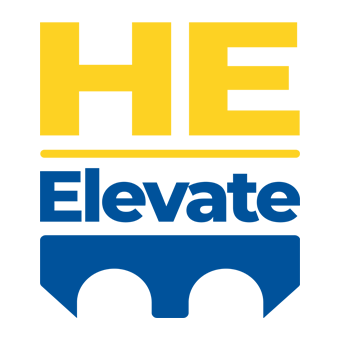

AI · Analytics · Education
Ken Moore Solutions
Data solutions, education & training — working across borders and industries.
Past clients & partners

AI · Analytics · Education
Data solutions, education & training — working across borders and industries.
Past clients & partners
What We Do
What are your biggest pain points?
We help across three major areas that enable you to better leverage your people and your data.
End-to-end technical delivery — from raw data to production-ready systems.
Rigorous quantitative methods applied to complex organisational and policy questions.
Strategic guidance and capability building for teams navigating data-driven change.
Specialist education advisory and curriculum development for Indonesian institutions and government partners.
Selected Works
A contemporary briefing on how higher education in Asia is shaping a new global order. Highlights key sector characteristics within national, regional, and international contexts, traverses the statistical contours of 16 selected systems, and frames what lies ahead for a region of enduring strategic importance.
Learn
Achievement unlocked! These tutorials represent a passion project I started during COVID but never finished until now — clean R implementations of the MIT Road Maps system dynamics series. Finally, if you want to learn SD modeling from scratch in R — for FREE — look no further!
Browse all tutorialsExponential growth
Sensitivity analysis
Goal-seeking / exponential decay
Asymptotic growth and decay
Combined positive and negative feedback
Two-stock epidemic structure
Two-stock cross-coupled structure
Friction as a structural factor
About
Helping organisations tackle unique challenges, sieze opportunities and raise productivity.
Together we define & reframe problems, scope solutions, and implement. We pave the way for lasting change by leveraging proven methods, AI & emerging technologies, and consultation & training.
My practice is international, serving Australia, Indonesia and the United States, with an expanding network across Asia and beyond.
Trusted by teams at…
